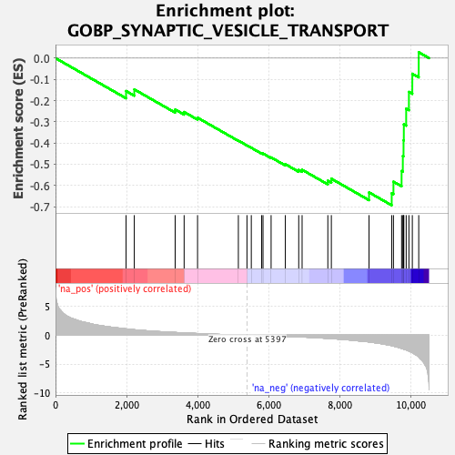
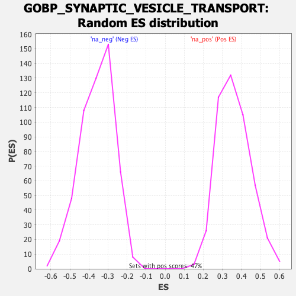

| Dataset | qlf.KOd4vsWTd4_gsea_score |
| Phenotype | NoPhenotypeAvailable |
| Upregulated in class | na_neg |
| GeneSet | GOBP_SYNAPTIC_VESICLE_TRANSPORT |
| Enrichment Score (ES) | -0.6937789 |
| Normalized Enrichment Score (NES) | -1.9392147 |
| Nominal p-value | 0.0 |
| FDR q-value | 0.019310487 |
| FWER p-Value | 0.277 |

| SYMBOL | RANK IN GENE LIST | RANK METRIC SCORE | RUNNING ES | CORE ENRICHMENT | |
|---|---|---|---|---|---|
| 1 | CTNNB1 | 1985 | 1.091 | -0.1552 | No |
| 2 | TMEM230 | 2216 | 0.946 | -0.1474 | No |
| 3 | BLOC1S2 | 3366 | 0.470 | -0.2423 | No |
| 4 | SYNJ1 | 3618 | 0.392 | -0.2540 | No |
| 5 | AP3S2 | 3996 | 0.290 | -0.2808 | No |
| 6 | BLOC1S5 | 5144 | 0.044 | -0.3889 | No |
| 7 | BLOC1S6 | 5386 | 0.003 | -0.4118 | No |
| 8 | DTNBP1 | 5508 | -0.016 | -0.4228 | No |
| 9 | TOR1A | 5799 | -0.064 | -0.4485 | No |
| 10 | AP3M1 | 5837 | -0.070 | -0.4498 | No |
| 11 | BLOC1S4 | 6065 | -0.109 | -0.4680 | No |
| 12 | SNAPIN | 6465 | -0.192 | -0.5001 | No |
| 13 | KIF5B | 6842 | -0.285 | -0.5270 | No |
| 14 | SPG11 | 6937 | -0.311 | -0.5262 | No |
| 15 | BLOC1S3 | 7661 | -0.554 | -0.5778 | No |
| 16 | PICALM | 7760 | -0.595 | -0.5685 | No |
| 17 | AP3M2 | 8820 | -1.166 | -0.6330 | No |
| 18 | CDK5 | 9458 | -1.811 | -0.6370 | Yes |
| 19 | BLOC1S1 | 9507 | -1.885 | -0.5825 | Yes |
| 20 | RAB3A | 9736 | -2.297 | -0.5322 | Yes |
| 21 | AP3S1 | 9771 | -2.367 | -0.4613 | Yes |
| 22 | AP3B1 | 9791 | -2.408 | -0.3876 | Yes |
| 23 | RAB27A | 9799 | -2.428 | -0.3121 | Yes |
| 24 | PINK1 | 9865 | -2.552 | -0.2383 | Yes |
| 25 | DNM2 | 9942 | -2.750 | -0.1593 | Yes |
| 26 | AP3D1 | 10038 | -3.021 | -0.0737 | Yes |
| 27 | KIF5C | 10218 | -3.776 | 0.0277 | Yes |
